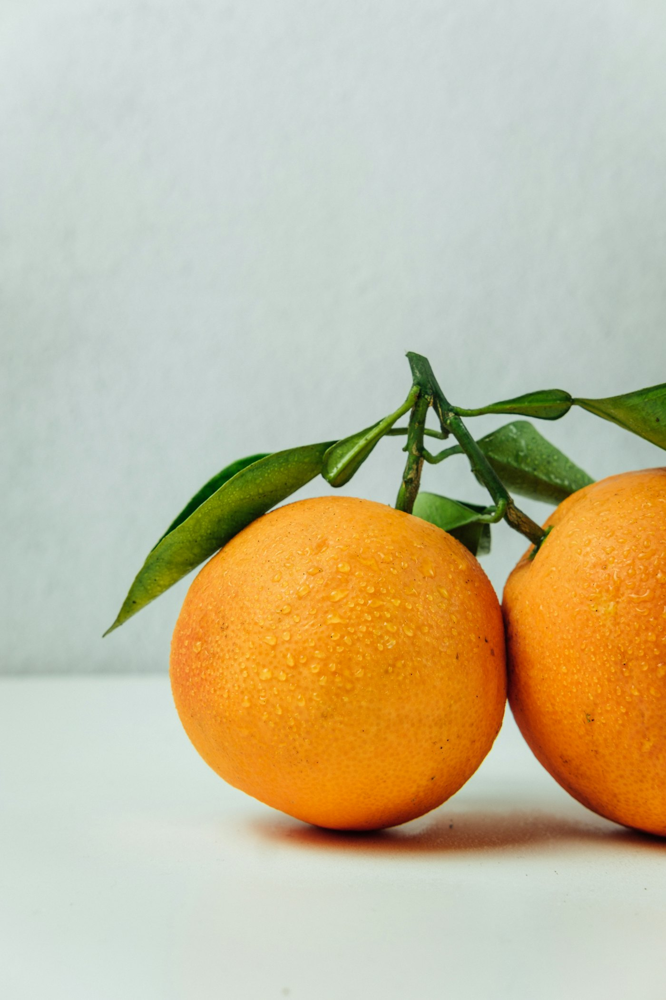
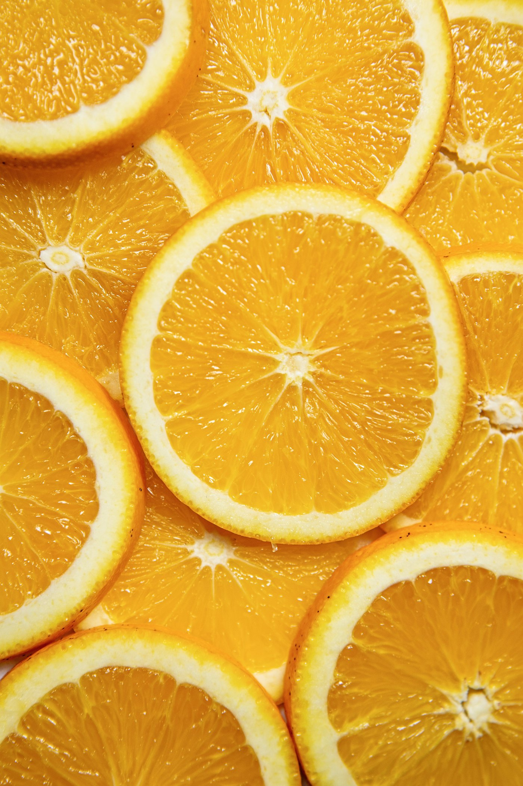
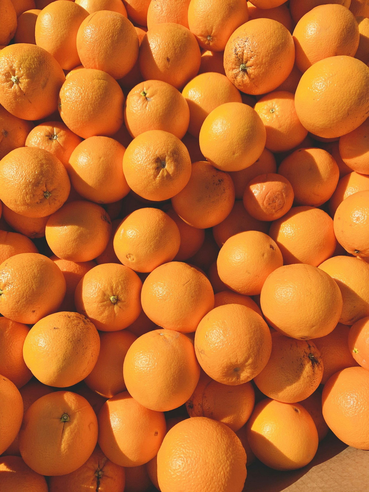
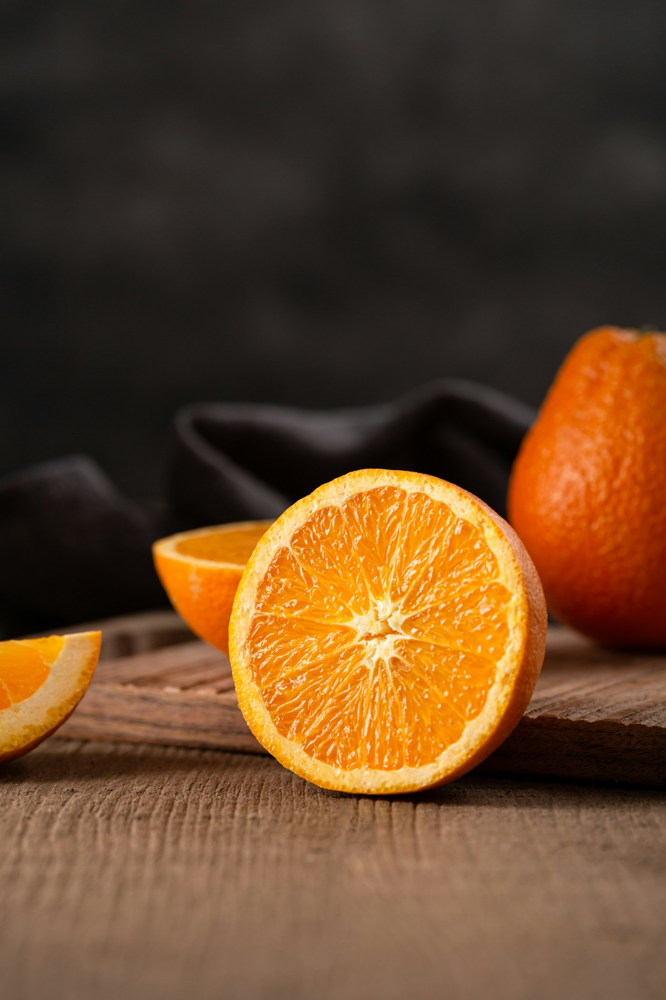
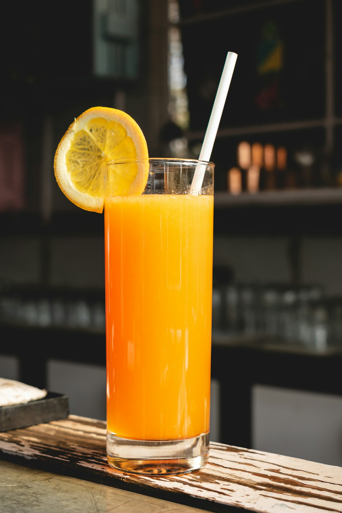

Arance di Rosarno.
Dalla terra alla tua tavola. SOS Rosarno - Mani e Terra SCS ONLUS vende arance direttamente dalla cooperativa: ricevi un box una volta sola o ogni mese.



Il box di arance
Arance di stagione dalla cooperativa, pronte per essere spedite. Scegli se acquistare una volta sola o abbonarti.

Una tantum
Da confermare
Un box, pagamento unico con carta o wallet, spedito all'indirizzo che indichi.
Abbonamento mensile
Da confermare
Un box al mese, addebitato ogni mese. Puoi disdire quando vuoi dal link che ricevi via email.
Preferisci ordinare per email? Scrivi a ordinisosrosarno@gmail.com.
Chi siamo
SOS Rosarno - Mani e Terra è una società cooperativa sociale ONLUS. Lavora la terra della piana di Rosarno e porta in tavola il frutto del lavoro.
Testo da confermare con la cooperativa.

Contatti
- Informazioni generali: sosrosarno@gmail.com
- Ordini: ordinisosrosarno@gmail.com
- Facebook: facebook.com/sosrosarno.org